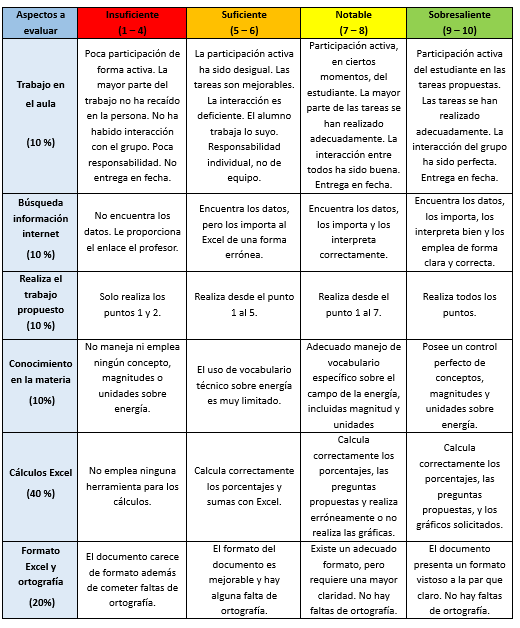

Se propone una actividad de investigación en temas relacionados con la generación de energía eléctrica en España. Se busca observar la evolución de las distintas tecnologías que han producido y producen este tipo de energía a lo largo del siglo XXI.
Metodología: Aprendizaje por descubrimiento.
Recursos materiales: Aula de ordenadores e internet.
Fechas: 7 y 10 de noviembre de 2025.
Procedimiento: Se debe desarrollar una hoja de cálculo (Excel) en la que se tratarán los datos de producción de energía en España los últimos 10 años y se realizarán estimaciones futuras en base a medidas impuestas por el gobierno y la Unión Europea.
Cada alumno trabaja de forma individual durante 2 sesiones y deberá cubrir los siguientes puntos en el orden que sigue:
1- Buscar y descargar, con la extensión .xlsx (compatible con Excel), todos los datos sobre generación de electricidad (GWh) de las distintas tecnologías de os últimos 10 años (2015 – 2024, ambos inclusive). Para ello emplear la página de la Red Eléctrica Española (REE).
2- Crear una tabla donde se recoja en el eje de abscisas los años y en el eje de ordenadas las distintas tecnologías.
Para facilitar los cálculos, agrupar las siguientes formas de generar electricidad:
- Otras renovables incluye: Biogás, Geotermia, Energía del mar, Biomasa, Turbinación por bombeo, Hidroeólica y Residuos renovables.
- Otras térmicas: Motor Diésel, Turbina de gas, Turbina de vapor, Residuos no renovables y Fuel + Gas.
Estos cálculos previos se pueden realizar en otra hoja dentro del mismo libro de Excel.
3- Calcular el total de producción energética renovable y no renovable para cada año.
4- Calcular el total de producción energética para cada uno de los años.
5- Calcular el porcentaje de cada tipo de energía con respecto al total de cada año.
6- Dibujar dos gráficos circulares en los que se observen los porcentajes de las tecnologías empleadas para generar electricidad tanto en 2015 y 2024.
7- Dibujar un gráfico de líneas para observar cómo evoluciona la generación de energía renovable y no renovable en estos 10 años.
8- Dibujar un gráfico de columnas apiladas para observar cómo evoluciona cada tecnología de generación de energía renovable y no renovable en estos 10 años.
9- Si para diciembre de 2025 se exigió el cierre de todas las centrales nucleares, ¿en qué energías renovables se debería realizar una inversión para suplir este porcentaje en 2026? Realizar una estimación en una columna seguida en la tabla.
Todo esto quedará reflejado en una hoja Excel, la cual debe servir como base para ordenar y realizar todos los cálculos. Es esencial para lograr una buena puntuación usar todas las herramientas que ofrece este programa, además de
El profesor guiará en todo momento a los estudiantes durante su realización. En caso de no terminar en 2 sesiones, se deberá finalizar en casa y la entrega será para todos por Aulas Virtuales.
La evaluación y calificación de esta tarea se realizará mediante la siguiente rúbrica:

Con esta actividad se están trabajando los siguientes criterios de evaluación y sus correspondientes competencias específicas de la legislación actual:
Competencia Específica 1. Coordinar y desarrollar proyectos de investigación con una actitud crítica y emprendedora, implementando estrategias y técnicas eficientes de resolución de problemas y comunicando los resultados de manera adecuada, para crear y mejorar productos y sistemas de manera continua.
1.4. Elaborar documentación técnica con precisión y rigor, generando diagramas funcionales y utilizando medios manuales y aplicaciones digitales.
1.5. Comunicar de manera eficaz y organizada las ideas y soluciones tecnológicas, empleando el soporte, la terminología y el rigor apropiados.
Competencia Específica 3. Utilizar las herramientas digitales adecuadas, analizando sus posibilidades, configurándolas de acuerdo a sus necesidades y aplicando conocimientos interdisciplinares, para resolver tareas, así como para realizar la presentación de los resultados de una manera óptima
3.1. Resolver tareas propuestas y funciones asignadas, mediante el uso y configuración de diferentes herramientas digitales de manera óptima y autónoma.
Competencia Específica 6. Analizar y comprender sistemas tecnológicos de los distintos ámbitos de la ingeniería, estudiando sus características, consumo y eficiencia energética, para evaluar el uso responsable y sostenible que se hace de la tecnología.
6.1. Evaluar los distintos sistemas de generación de energía eléctrica y mercados energéticos, estudiando sus características, calculando sus magnitudes y valorando su eficiencia.
Además, se trabajan las siguientes competencias clave: Competencia en comunicación lingüística, Competencia digital, Competencia matemática y en ciencia, tecnología e ingeniería, Competencia personal, social y de aprender a aprender, Competencia ciudadana y Competencia en conciencia y expresiones culturales.